MOM5, MOM6, and NEMO performance overview
Marshall Ward
National Computational Infrastructure

Model configurations
| Model | Config | Horizontal | Vertical |
|---|---|---|---|
| MOM 5.1 | "CM2.5" | 1440 x 1080 | 50 |
| NEMO 3.4 | ORCA 0.25° | 1442 x 1021 | 46 |
| MOM 6 | OM4 | 1440 x 1080 | 75 |
- Serial ocean-ice coupling
- 10-day runtime
- No model output
1-year simulation times
| Model | CPUs | CPU Hrs | Time (s) | yr/day |
|---|---|---|---|---|
| MOM 5 | 960 | 1868.0 | 7088.2 | 12.1 |
| 1920 | 2126.3 | 3986.8 | 21.7 | |
| NEMO | 960 | 1368.8 | 5132.9 | 16.8 |
| 1920 | 1964.2 | 3753.6 | 23.0 | |
| MOM 6 | 480 | 3910.1 | 29363.1 | 2.9 |
| 960 | 4458.6 | 16756.5 | 5.2 | |
| 1920 | 5154.6 | 9718.3 | 8.9 | |
| 3840 | 6349.0 | 6057.2 | 14.3 |
1 year, MOM 5 vs NEMO
| Model | CPUs | CPU Hrs | Time (s) | yr/day |
|---|---|---|---|---|
| MOM | 480 | 1832.4 | 13783.9 | 12.1 |
| 960 | 1868.0 | 7088.2 | 12.1 | |
| 1920 | 2126.3 | 3986.8 | 21.7 | |
| 3840 | 4075.2 | 3995.6 | 21.6 | |
| NEMO | 480 | 1068.0 | 8043.6 | 10.7 |
| 960 | 1368.8 | 5132.9 | 16.8 | |
| 1920 | 1964.2 | 3753.6 | 23.0 | |
| 3840 | 3547.8 | 3413.9 | 25.3 |
Ocean runtime

Sea ice runtime

Initialisation
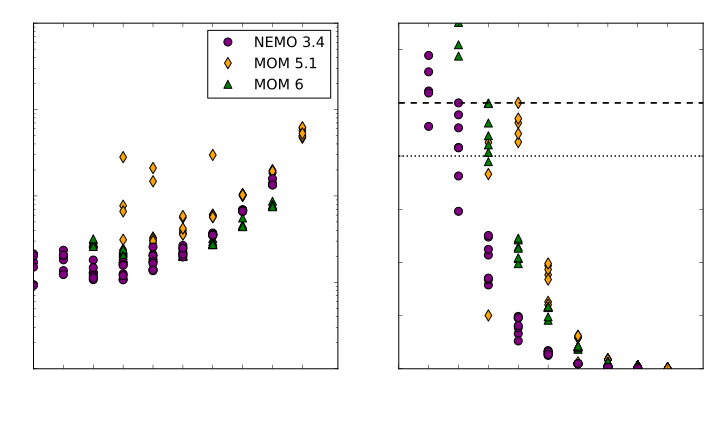MPI Initialisation
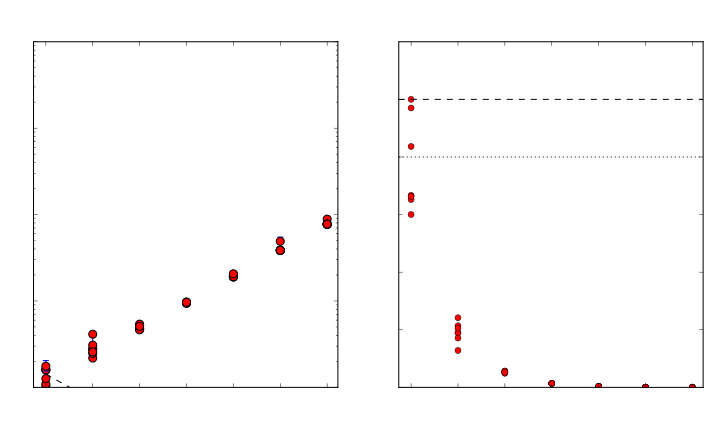MOM 5 subroutine comparison
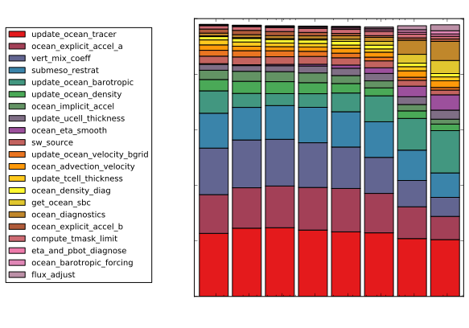MOM 5: Tracer advection

MOM 5: Barotropic solver

MOM 5: Free surface smoothing

MOM 5: Runtime diagnostics

MOM 5: Surface field interpolation (2D)
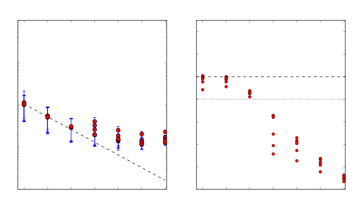NEMO subroutine comparison

NEMO: Surface pressure gradient
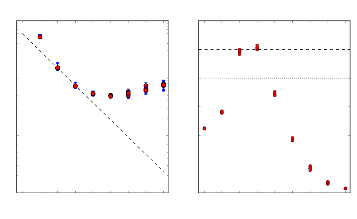NEMO: Tracer advection

NEMO: Runtime diagnostics

NEMO: Tracer relaxation (damping)
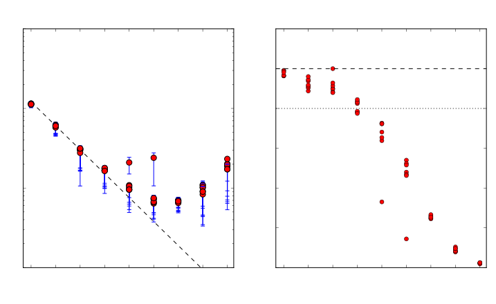MOM 6 subroutine comparison

MOM 6: Dynamics
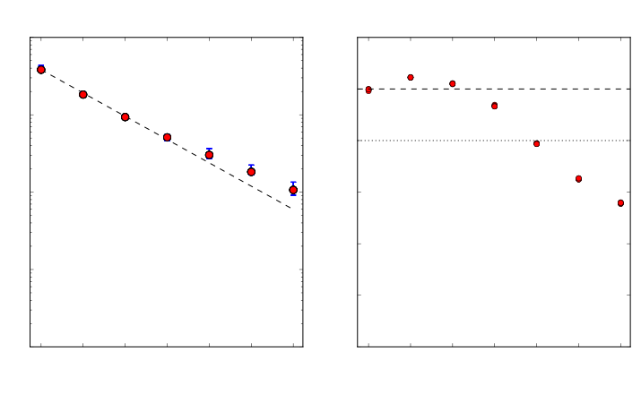MOM 6: Halo updates

MOM 6: TODO "Diabatic"

MOM 6: Tracer advection
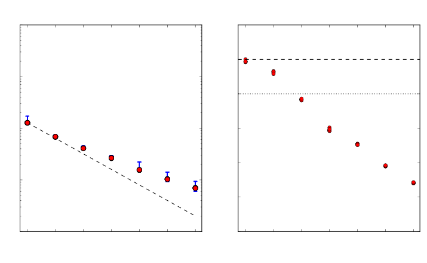MOM 6 dynamics components
MOM 6 dynamics: Halo updates

MOM 6 dynamics: Barotropic timestep
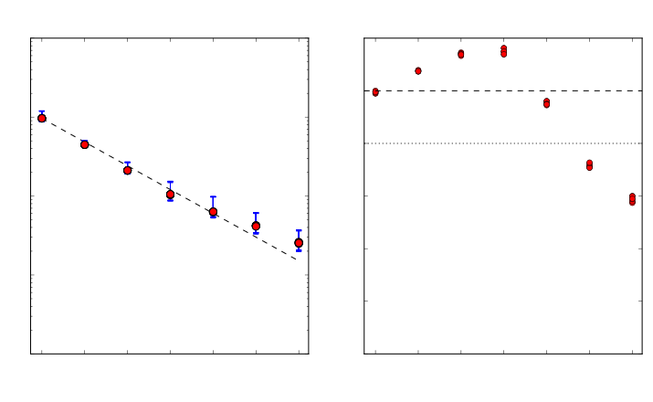MOM 6 dynamics: Mass/Volume continuity
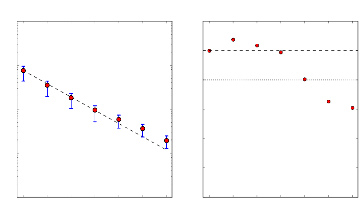MOM 6 dynamics: "Pressure force"

MOM 6 dynamics: "set dtbt"
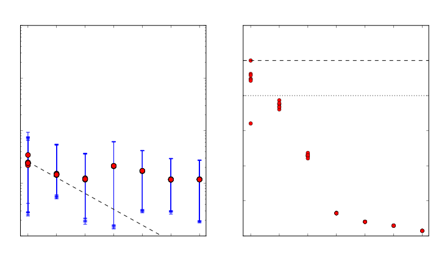MOM 5 vectorisation
| Subroutine | FLOPs | % vector |
|---|---|---|
| MAIN | 2.04e+10 | 0.881 |
| update_ocean_model | 1.87e+10 | 0.91 |
| update_ocean_tracer | 8.40e+09 | 0.929 |
| vert_mix_coeff | 2.04e+09 | 0.809 |
| ocean_explicit_accel_a | 1.95e+09 | 0.928 |
| update_ocean_barotropic | 1.80e+09 | 0.945 |
| ocean_eta_smooth | 1.78e+07 | 0.875 |
| update_ice_model_slow_dn | 7.48e+08 | 0.832 |
NEMO 3.4 vectorisation
| Subroutine | FLOPs | % vector |
|---|---|---|
| stp | 1.32e+10 | 0.55 |
| dyn_spg | 1.85e+09 | 0.96 |
| tra_adv | 1.31e+09 | 0.601 |
| tra_dmp | 4.18e+07 | 0.934 |
| ldf_slp | 7.47e+08 | 0.375 |
| sbc | 3.90e+09 | 0.0621 |
| sbc_ice_lim_2 | 3.80e+09 | 0.0435 |
| lim_dyn_2 | 3.61e+09 | 0.0134 |
MOM 6 vectorisation
| Subroutine | FLOPs | % vector |
|---|---|---|
| MAIN | 5.20e+10 | 0.653 |
| update_ocean_model | 5.00e+10 | 0.657 |
| step_mom_dyn_split_rk2 | 3.80e+10 | 0.677 |
| ale_main | 9.85e+07 | 0.598 |
| diabatic | 3.54e+09 | 0.476 |
| mixedlayer_restrat | 1.83e+09 | 0.569 |
| advect_tracer | 1.17e+09 | 0.892 |
| update_ice_model_slow_dn | 1.08e+09 | 0.769 |
MOM 6 dynamics vectorisation
| Subroutine | FLOPs | % vector |
|---|---|---|
| step_mom_dyn_split_rk2 | 3.80e+10 | 0.677 |
| btstep | 4.35e+09 | 0.638 |
| do_group_pass | 2.40e+03 | 0.0 |
| continuity | 1.51e+07 | 0.874 |
| set_dtbt | 5.07e+04 | 0.248 |
| pressureforce | 1.55e+10 | 0.795 |
| set_viscous_bbl | 2.23e+08 | 0.49 |
Results
- NEMO
- Fastest serial computation
- Lowest memory usage
- Severe barotropic scaling constraint
- MOM 5
- Strong scalability
- High vectorisation (~90%)
- Significant barotropic scaling limit
- MOM 6
- Inefficient scalability
- Moderate vectorisation (~65%)
MOM 5, 0.1° scaling

MOM 5, 0.1° subroutines